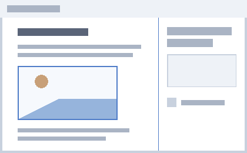

Un document Word bien structuré se lit plus vite et s'exporte correctement. La structure, c'est ce qui permet de générer une table des matières, de naviguer dans un document long, et de produire un PDF utilisable.
Dans Word, un titre n'est pas un texte agrandi et mis en gras. C'est un style, appliqué depuis le ruban Accueil. Cliquez sur Styles pour voir la galerie.
Chaque image doit porter un texte de remplacement. Faites un clic droit sur l'image, puis « Modifier le texte de remplacement ».

Word intègre un vérificateur d'accessibilité. Pour en savoir plus, cliquez ici.
| Action | Statut |
| Styles de titre appliqués | ● |
| Textes de remplacement | ● |
| Vérificateur passé | ● |
| Export balisé | ● |
Vert = fait, rouge = à faire.
60%
Nom
Nombre de participants